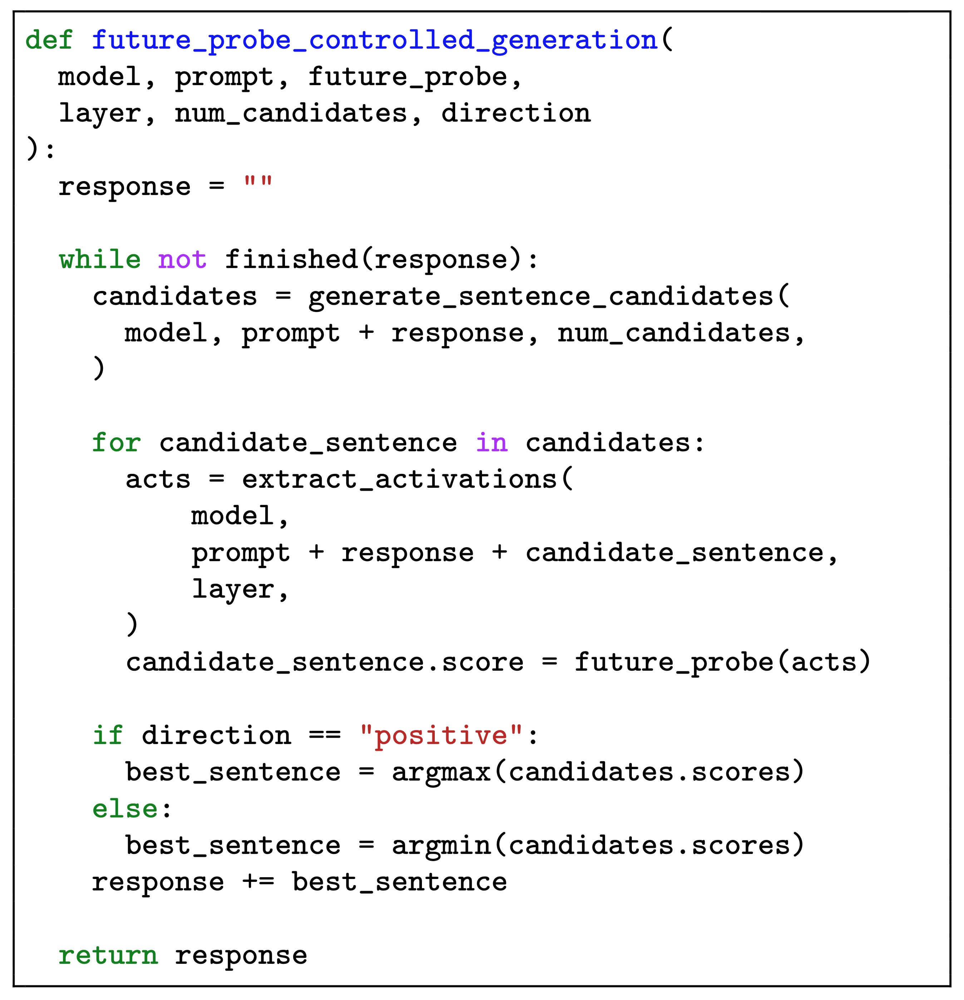

Interpretability tools that predict and control model behaviors typically rely on contrastive input pairs. This binary data hides the probabilistic nature of language model decision making. During reasoning, LLMs can keep track of multiple behavioral options before committing. We find that these future behavior distributions are reflected in their representations. We can steer the behavioral outcome by choosing the reasoning sentences that maximize the estimated probability of a future behavior.

Probabilistic view of LRM decision-making
Analyzing a single roll-out of a reasoning model is not enough to understand its behavior. Instead, we resample after every reasoning step to get a probability of a future behavior happening after this step. This allows us to see where the model commits to act in a certain way.

Predicting future behaviors ≠ detecting current behaviors
We train a probe to predict these future behavior probabilities. Typically, one can estimate the most likely behavior with high accuracy.
Binary classifiers on contrastive data, typically used for detection and steering, are bad predictors of future behaviors. Models represent behaviors that already happened differently from the ones that will happen in the future.

Steering the model towards a desired future behavior
Estimating the probability of a future behavior can be used to steer the model towards a desired outcome. We propose a simple algorithm — Future Probe Controlled Generation (FPCG) — that samples multiple candidates for each sentence, and selects the best using an activation probe that predicts future behavior likelihoods.

Citation
If you build on this work, please cite our paper:
@misc{kortukov2026predictingfuturebehaviorsreasoning,
title={Predicting Future Behaviors in Reasoning Models Enables Better Steering},
author={Evgenii Kortukov and Piotr Komorowski and Florian Klein and Paula Engl
and Gabriele Sarti and Seong Joon Oh and Sebastian Lapuschkin and Wojciech Samek},
year={2026},
eprint={2606.11172},
archivePrefix={arXiv},
primaryClass={cs.LG},
url={https://arxiv.org/abs/2606.11172},
}